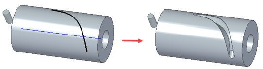

Construct a Solid Sweep Cutout
Use the following workflow to create a solid sweep cutout.
-
Solid Sweep Cutout requires a solid body for the tool and a solid body for the material to be cut. Set the solid body to be cut as the active body.
-
Choose Home tab→Solids group→Cut list→ Solid Sweep Cutout.
-
Select the Path
 .
. Both 2D and 3D paths are supported .
-
Select the Tool
 .
.For tool body examples, see the Solid Sweep Cutout command.
-
Define the Axis
 .Note:
.Note:If the tool is cylindrical, the axis defaults to the cylinder axis.
If the tool is not on the path, you can move it to the path by clicking the Place Tool On Path button
 .
.The following is an example of a tool placed with this option deselected.

If you want to place the sweep tool normal to a surface on the circular or round body while creating a swept cutout, click the Place Tool Normal to Surface button .
With this option selected, the sweep tool follows the path correctly on the circular body, which results in a precise swept cutout.

-
Set the Axis Lock Direction if needed.
-
Click Finish.
The solid sweep cutout is created.
How do I
Construct a swept protrusion or cutoutConstruct a Solid Sweep Protrusion
Learn more
Constructing swept featuresLook up more details
Swept Protrusion commandSwept Protrusion command bar
Sweep Options dialog box
Swept Cutout command
Swept Cutout command bar
Solid Sweep Protrusion command
Solid Sweep Cutout command
Solid Sweep Cutout command bar